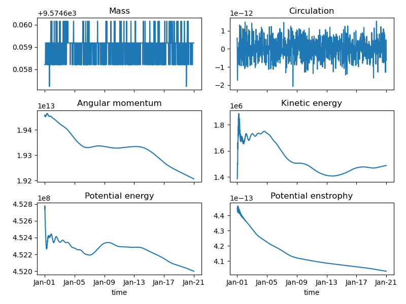

Analysing a simulation
While you can analyze a SpeedyWeather simulation through its NetCDF output (i.e., offline analysis), as most users will be used to with other models, you can also reuse a lot of functionality from SpeedyWeather interactively for analysis. This makes SpeedyWeather beyond being a model for the atmospheric general circulation also a library with many functions for the analysis of simulations. Often this also avoids the two-language problem that you will face if you run a simulation with a model in one language but then do the data analysis in another, treating the model as a blackbox although it likely has many of the functions you will need for analysis already defined. With SpeedyWeather we try to avoid this and are working towards a more unified approach in atmospheric modelling where simulation and analysis are done interactively with the same library: SpeedyWeather.jl.
Advantages of online analysis
Now you could run a SpeedyWeather simulation, and analyse the NetCDF output but that comes with several issues related to accuracy
- If you use a reduced grid for the simulation, then the output will (by default) be interpolated on a full grid. This interpolation introduces an error.
- Computing integrals over gridded data on the sphere by weighting every grid point according to its area is not the most accurate numerical integration.
- Computing gradients over gridded data comes with similar issues. While our RingGrids are always equidistant in longitude, they are not necessarily in latitude.
The first point you can avoid by running a simulation on one of the full grids that are implemented, see SpectralGrid. But that also impacts the simulation and for various reasons we don't run on full grids by default.
The second point you can address by defining a more advanced numerical integration scheme, but that likely requires you to depend on external libraries and then, well, you could also just depend on SpeedyWeather.jl directly, because we have to do these computations internally anyway. Similar for the third point, many gradients have to be computed on every time step and we do that with spectral transforms to reduce the discretization error.
The following contains a (hopefully growing) list of examples of how a simulation can be analysed interactively. We call this online analysis because you are directly using the functionality from the model as if it was a library. For simplicity, we use the shallow water model to demonstrate this.
Mass conservation
In the absence of sources and sinks for the interface displacement $\eta$ in the shallow water equations, total mass (or equivalently volume as density is constant) is conserved. The total volume is defined as the integral of the dynamic layer thickness $h = \eta + H - H_b$ ($H$ is the layer thickness at rest, $H_b$ is orography) over the surface $A$ of the sphere
\[M = \iint h dA = \iint \left(\eta + H - H_b\right) dA\]
to check for conservation we want to assess that
\[\frac{\partial M}{\partial t} = 0\]
And because $V = \iint H dA - \iint H_b dA$, the total volume at rest, is a constant ($H$ is a global constant, the orography $H_b$ does not change with time) we can just check whether $\iint \eta dA$ changes over time. Instead of computing this integral in grid-point space, we use the spectral $\eta$ whereby the coefficient of the first spherical harmonic (the $l = m = 0$ mode, or wavenumber 0, see Spherical Harmonic Transform) encodes the global average.
using SpeedyWeather
spectral_grid = SpectralGrid(trunc=31, nlev=1)
model = ShallowWaterModel(;spectral_grid)
simulation = initialize!(model)Simulation{ShallowWaterModel}
├ PrognosticVariables{Float32, OctahedralGaussianGrid{Float32}, ShallowWater}
├ DiagnosticVariables{Float32, OctahedralGaussianGrid{Float32}, ShallowWater}
└ model::ShallowWaterModelNow we check $\eta_{0,0}$ the $l = m = 0$ coefficent of the inital conditions of that simulation with
simulation.prognostic_variables.surface.timesteps[1].pres[1]4634.5415f0 + 0.0f0im[1] pulls the first element of the underlying LowerTriangularMatrix which is the coefficient of the $l = m = 0$ mode. Its imaginary part is always zero (which is true for any zonal harmonic $m=0$ as its imaginary part would just unnecessarily rotate something zonally constant in zonal direction), so you can real it. Also for spherical harmonic transforms there is a norm of the sphere by which you have to divide to get your mean value in the original units
a = model.spectral_transform.norm_sphere # = 2√π = 3.5449078
η_mean = real(simulation.prognostic_variables.surface.timesteps[1].pres[1]) / a1307.38f0So the initial conditions in this simulation are such that the global mean interface displacement is that value in meters. You would need to multiply by the area of the sphere $4\pi R^2$ (radius $R$) to get the actual integral from above, but because that doesn't change with time either, we just want to check that η_mean doesn't change with time. Which is equivalent to $\partial_t \iint \eta dA = 0$ and so volume conservation and because density is constant also mass conservation. Let's check what happens after the simulation ran for some days
run!(simulation, period=Day(10))
# now we check η_mean again
η_mean_later = real(simulation.prognostic_variables.surface.timesteps[1].pres[1]) / a1307.38f0which is exactly the same. So mass is conserved, woohoo.
Insight from a numerical perspective: The tendency of $\eta$ is $\partial_t \eta = -\nabla \cdot (\mathbf{u} h)$ which is a divergence of a flux. Calculating the divergence in spherical harmonics always sets the $l=m=0$ mode to zero exactly (the gradient of a periodic variable has zero mean) so the time integration here is always with an exactly zero tendency.
Energy
The total energy in the shallow water equations is the sum of the kinetic energy density $\frac{1}{2}(u^2 + v^2)$ and the potential energy density $gz$ integrated over the total volume (times $h=\eta+H-H_b$ for the vertical then integrated over the sphere $\iint dA$).
\[\begin{align} E & = \iint \left[ \int_{H_b}^{\eta}\frac{1}{2}\left(u^2 + v^2 + gz\right)dz \right]dA \\ & = \iint \frac{1}{2}\left(u^2 + v^2 + gh\right)h dA \end{align}\]
In contrast to the Mass conservation which, with respect to the spectral transform, is a linear calculation, here we need to multiply variables, which has to be done in grid-point space. Then we can transform to spectral space for the global integral as before. Let us define a total_energy function as
using SpeedyWeather
function total_energy(u, v, η, model)
H = model.atmosphere.layer_thickness
Hb = model.orography.orography
g = model.planet.gravity
h = @. η + H - Hb # layer thickness between the bottom and free surface
E = @. h/2*(u^2 + v^2) + g*h^2 # vertically-integrated mechanical energy
# transform to spectral, take l=m=0 mode at [1] and normalize for mean
return E_mean = real(spectral(E)[1]) / model.spectral_transform.norm_sphere
endtotal_energy (generic function with 1 method)So at the current state of our simulation we have a total energy (per square meter as we haven't multiplied by the surface area of the planet).
# flat copies for convenience
u = simulation.diagnostic_variables.layers[1].grid_variables.u_grid
v = simulation.diagnostic_variables.layers[1].grid_variables.v_grid
η = simulation.diagnostic_variables.surface.pres_grid
TE = total_energy(u, v, η, model)9.060546f8with units of $m^3 s^{-2}$ (multiplying by surface area of the sphere and density of the fluid would turn it into joule = $kg \, m^2 s^{-2}$). To know in general where to find the respective variables $u, v, \eta$ inside our simulation object see Prognostic variables and Diagnostic variables. Now let us continue the simulation
run!(simulation, period=Day(10))
# we don't need to reassign u, v, η as they were flat copies
# pointing directly to the diagnostic variables inside the simulation
# which got updated during run!
TE_later = total_energy(u, v, η, model)9.054865f8So the total energy has somewhat changed, it decreased to
TE_later/TE0.999373f0of its previous value over 10 days.
While technically energy should be conserved in an unforced system, numerically this is rarely exactly the case. We need some Horizontal diffusion for numerical stability and also the time integration is dissipative due to temporal filtering, see Time integration. Note that the energy here is inversely cascading to larger scales, and this makes the dissipation of energy through Horizontal diffusion really inefficient, because in spectral space, standard Laplacian diffusion is proportional to $k^2$ where $k$ is the wavenumber. By default, we use a 4th power Laplacian, so the diffusion here is proportional to $k^8$.
Potential vorticity
Potential vorticity in the shallow water equations is defined as
\[q = \frac{f + \zeta}{h}\]
with $f$ the Coriolis parameter, $\zeta$ the relative vorticity, and $h$ the layer thickness as before. We can calculate this conveniently directly on the model grid (whichever you chose) as
# vorticity
ζ = simulation.diagnostic_variables.layers[1].grid_variables.vor_grid
f = coriolis(ζ) # create f on that grid
# layer thickness
η = simulation.diagnostic_variables.surface.pres_grid
H = model.atmosphere.layer_thickness
Hb = model.orography.orography
h = @. η + H - Hb
# potential vorticity
q = @. (f + ζ) / hand we can compare the relative vorticity field to
plot(ζ) 48-ring OctahedralGaussianGrid{Float32}
┌────────────────────────────────────────────────────────────┐ 5e⁻⁵
90 │▄▄▄▄▄▄▄▄▄▄▄▄▄▄▄▄▄▄▄▄▄▄▄▄▄▄▄▄▄▄▄▄▄▄▄▄▄▄▄▄▄▄▄▄▄▄▄▄▄▄▄▄▄▄▄▄▄▄▄▄│ ┌──┐
│▄▄▄▄▄▄▄▄▄▄▄▄▄▄▄▄▄▄▄▄▄▄▄▄▄▄▄▄▄▄▄▄▄▄▄▄▄▄▄▄▄▄▄▄▄▄▄▄▄▄▄▄▄▄▄▄▄▄▄▄│ │▄▄│
│▄▄▄▄▄▄▄▄▄▄▄▄▄▄▄▄▄▄▄▄▄▄▄▄▄▄▄▄▄▄▄▄▄▄▄▄▄▄▄▄▄▄▄▄▄▄▄▄▄▄▄▄▄▄▄▄▄▄▄▄│ │▄▄│
│▄▄▄▄▄▄▄▄▄▄▄▄▄▄▄▄▄▄▄▄▄▄▄▄▄▄▄▄▄▄▄▄▄▄▄▄▄▄▄▄▄▄▄▄▄▄▄▄▄▄▄▄▄▄▄▄▄▄▄▄│ │▄▄│
│▄▄▄▄▄▄▄▄▄▄▄▄▄▄▄▄▄▄▄▄▄▄▄▄▄▄▄▄▄▄▄▄▄▄▄▄▄▄▄▄▄▄▄▄▄▄▄▄▄▄▄▄▄▄▄▄▄▄▄▄│ │▄▄│
│▄▄▄▄▄▄▄▄▄▄▄▄▄▄▄▄▄▄▄▄▄▄▄▄▄▄▄▄▄▄▄▄▄▄▄▄▄▄▄▄▄▄▄▄▄▄▄▄▄▄▄▄▄▄▄▄▄▄▄▄│ │▄▄│
│▄▄▄▄▄▄▄▄▄▄▄▄▄▄▄▄▄▄▄▄▄▄▄▄▄▄▄▄▄▄▄▄▄▄▄▄▄▄▄▄▄▄▄▄▄▄▄▄▄▄▄▄▄▄▄▄▄▄▄▄│ │▄▄│
˚N │▄▄▄▄▄▄▄▄▄▄▄▄▄▄▄▄▄▄▄▄▄▄▄▄▄▄▄▄▄▄▄▄▄▄▄▄▄▄▄▄▄▄▄▄▄▄▄▄▄▄▄▄▄▄▄▄▄▄▄▄│ │▄▄│
│▄▄▄▄▄▄▄▄▄▄▄▄▄▄▄▄▄▄▄▄▄▄▄▄▄▄▄▄▄▄▄▄▄▄▄▄▄▄▄▄▄▄▄▄▄▄▄▄▄▄▄▄▄▄▄▄▄▄▄▄│ │▄▄│
│▄▄▄▄▄▄▄▄▄▄▄▄▄▄▄▄▄▄▄▄▄▄▄▄▄▄▄▄▄▄▄▄▄▄▄▄▄▄▄▄▄▄▄▄▄▄▄▄▄▄▄▄▄▄▄▄▄▄▄▄│ │▄▄│
│▄▄▄▄▄▄▄▄▄▄▄▄▄▄▄▄▄▄▄▄▄▄▄▄▄▄▄▄▄▄▄▄▄▄▄▄▄▄▄▄▄▄▄▄▄▄▄▄▄▄▄▄▄▄▄▄▄▄▄▄│ │▄▄│
│▄▄▄▄▄▄▄▄▄▄▄▄▄▄▄▄▄▄▄▄▄▄▄▄▄▄▄▄▄▄▄▄▄▄▄▄▄▄▄▄▄▄▄▄▄▄▄▄▄▄▄▄▄▄▄▄▄▄▄▄│ │▄▄│
│▄▄▄▄▄▄▄▄▄▄▄▄▄▄▄▄▄▄▄▄▄▄▄▄▄▄▄▄▄▄▄▄▄▄▄▄▄▄▄▄▄▄▄▄▄▄▄▄▄▄▄▄▄▄▄▄▄▄▄▄│ │▄▄│
│▄▄▄▄▄▄▄▄▄▄▄▄▄▄▄▄▄▄▄▄▄▄▄▄▄▄▄▄▄▄▄▄▄▄▄▄▄▄▄▄▄▄▄▄▄▄▄▄▄▄▄▄▄▄▄▄▄▄▄▄│ │▄▄│
-90 │▄▄▄▄▄▄▄▄▄▄▄▄▄▄▄▄▄▄▄▄▄▄▄▄▄▄▄▄▄▄▄▄▄▄▄▄▄▄▄▄▄▄▄▄▄▄▄▄▄▄▄▄▄▄▄▄▄▄▄▄│ └──┘
└────────────────────────────────────────────────────────────┘ -6e⁻⁵
0 ˚E 360 the potential vorticity
plot(q) 48-ring OctahedralGaussianGrid{Float32}
┌────────────────────────────────────────────────────────────┐ 2e⁻⁸
90 │▄▄▄▄▄▄▄▄▄▄▄▄▄▄▄▄▄▄▄▄▄▄▄▄▄▄▄▄▄▄▄▄▄▄▄▄▄▄▄▄▄▄▄▄▄▄▄▄▄▄▄▄▄▄▄▄▄▄▄▄│ ┌──┐
│▄▄▄▄▄▄▄▄▄▄▄▄▄▄▄▄▄▄▄▄▄▄▄▄▄▄▄▄▄▄▄▄▄▄▄▄▄▄▄▄▄▄▄▄▄▄▄▄▄▄▄▄▄▄▄▄▄▄▄▄│ │▄▄│
│▄▄▄▄▄▄▄▄▄▄▄▄▄▄▄▄▄▄▄▄▄▄▄▄▄▄▄▄▄▄▄▄▄▄▄▄▄▄▄▄▄▄▄▄▄▄▄▄▄▄▄▄▄▄▄▄▄▄▄▄│ │▄▄│
│▄▄▄▄▄▄▄▄▄▄▄▄▄▄▄▄▄▄▄▄▄▄▄▄▄▄▄▄▄▄▄▄▄▄▄▄▄▄▄▄▄▄▄▄▄▄▄▄▄▄▄▄▄▄▄▄▄▄▄▄│ │▄▄│
│▄▄▄▄▄▄▄▄▄▄▄▄▄▄▄▄▄▄▄▄▄▄▄▄▄▄▄▄▄▄▄▄▄▄▄▄▄▄▄▄▄▄▄▄▄▄▄▄▄▄▄▄▄▄▄▄▄▄▄▄│ │▄▄│
│▄▄▄▄▄▄▄▄▄▄▄▄▄▄▄▄▄▄▄▄▄▄▄▄▄▄▄▄▄▄▄▄▄▄▄▄▄▄▄▄▄▄▄▄▄▄▄▄▄▄▄▄▄▄▄▄▄▄▄▄│ │▄▄│
│▄▄▄▄▄▄▄▄▄▄▄▄▄▄▄▄▄▄▄▄▄▄▄▄▄▄▄▄▄▄▄▄▄▄▄▄▄▄▄▄▄▄▄▄▄▄▄▄▄▄▄▄▄▄▄▄▄▄▄▄│ │▄▄│
˚N │▄▄▄▄▄▄▄▄▄▄▄▄▄▄▄▄▄▄▄▄▄▄▄▄▄▄▄▄▄▄▄▄▄▄▄▄▄▄▄▄▄▄▄▄▄▄▄▄▄▄▄▄▄▄▄▄▄▄▄▄│ │▄▄│
│▄▄▄▄▄▄▄▄▄▄▄▄▄▄▄▄▄▄▄▄▄▄▄▄▄▄▄▄▄▄▄▄▄▄▄▄▄▄▄▄▄▄▄▄▄▄▄▄▄▄▄▄▄▄▄▄▄▄▄▄│ │▄▄│
│▄▄▄▄▄▄▄▄▄▄▄▄▄▄▄▄▄▄▄▄▄▄▄▄▄▄▄▄▄▄▄▄▄▄▄▄▄▄▄▄▄▄▄▄▄▄▄▄▄▄▄▄▄▄▄▄▄▄▄▄│ │▄▄│
│▄▄▄▄▄▄▄▄▄▄▄▄▄▄▄▄▄▄▄▄▄▄▄▄▄▄▄▄▄▄▄▄▄▄▄▄▄▄▄▄▄▄▄▄▄▄▄▄▄▄▄▄▄▄▄▄▄▄▄▄│ │▄▄│
│▄▄▄▄▄▄▄▄▄▄▄▄▄▄▄▄▄▄▄▄▄▄▄▄▄▄▄▄▄▄▄▄▄▄▄▄▄▄▄▄▄▄▄▄▄▄▄▄▄▄▄▄▄▄▄▄▄▄▄▄│ │▄▄│
│▄▄▄▄▄▄▄▄▄▄▄▄▄▄▄▄▄▄▄▄▄▄▄▄▄▄▄▄▄▄▄▄▄▄▄▄▄▄▄▄▄▄▄▄▄▄▄▄▄▄▄▄▄▄▄▄▄▄▄▄│ │▄▄│
│▄▄▄▄▄▄▄▄▄▄▄▄▄▄▄▄▄▄▄▄▄▄▄▄▄▄▄▄▄▄▄▄▄▄▄▄▄▄▄▄▄▄▄▄▄▄▄▄▄▄▄▄▄▄▄▄▄▄▄▄│ │▄▄│
-90 │▄▄▄▄▄▄▄▄▄▄▄▄▄▄▄▄▄▄▄▄▄▄▄▄▄▄▄▄▄▄▄▄▄▄▄▄▄▄▄▄▄▄▄▄▄▄▄▄▄▄▄▄▄▄▄▄▄▄▄▄│ └──┘
└────────────────────────────────────────────────────────────┘ -2e⁻⁸
0 ˚E 360 Absolute angular momentum
Similar to the total mass, in the absence of sources and sinks for momentum, total absolute angular momentum (AAM) defined as
\[\Lambda = \iint \left(ur + \Omega r^2\right)h dA\]
should be conserved ($\partial_t\Lambda = 0$). Here $u$ is the zonal velocity, $\Omega$ the angular velocity of the Earth, $r = R \cos\phi$ the momentum arm at latitude $\phi$, and $R$ the radius of Earth.
Following previous examples, let us define a total_angular_momentum function as
using SpeedyWeather
function total_angular_momentum(u, η, model)
H = model.atmosphere.layer_thickness
Hb = model.orography.orography
R = model.spectral_grid.radius
Ω = model.planet.rotation
r = R * cos.(model.geometry.lats) # momentum arm for every grid point
h = @. η + H - Hb # layer thickness between the bottom and free surface
Λ = @. (u*r + Ω*r^2) * h # vertically-integrated AAM
# transform to spectral, take l=m=0 mode at [1] and normalize for mean
return Λ_mean = real(spectral(Λ)[1]) / model.spectral_transform.norm_sphere
endtotal_angular_momentum (generic function with 1 method)Anytime we stop the simulation, we can calculate $\Lambda$ using this function (ignoring the multiplication by $4\pi R^2$ to get total $\Lambda$).
# use u, η from current state of simulation
Λ_current = total_angular_momentum(u, η, model)1.9206498628680484e13So after some days of integration, we would get another $\Lambda$ with
run!(simulation, period=Day(10))
# u, η got updated during run!
Λ_later = total_angular_momentum(u, η, model)
Λ_later / Λ_current0.9922353039987138and measure its relative change. Similar to energy, in the numerical integration, Λ is not exactly conserved due to Horizontal diffusion.
Circulation
Total circulation is defined as the area-integrated absolute vorticity:
\[C = \iint \left(\zeta + f\right) dA\]
Following previous fashion, we define a function total_circulation for this
function total_circulation(ζ, model)
f = coriolis(ζ) # create f on the grid of ζ
C = ζ .+ f # absolute vorticity
# transform to spectral, take l=m=0 mode at [1] and normalize for mean
return C_mean = real(spectral(C)[1]) / model.spectral_transform.norm_sphere
end
total_circulation(ζ, model)-4.6615614f-13Note that the area integral of relative vorticity $\zeta$ and planetary vorticity $f$ over the whole surface of a sphere are analytically exactly zero. Numerically, C_mean should be a small number but may not be exactly zero due to numerical precision and errors in the spectral transform.
Potential enstrophy
The total potential enstrophy is defined as the second-moment of potential vorticity $q$
\[Q = \iint \frac{1}{2}q^2 dA\]
In the absence of source and sink for potential vorticiy, this quantity should also conserve during the integration.
We define a function $total_enstrophy$ for this
function total_enstrophy(ζ, η, model)
# constants from model
H = model.atmosphere.layer_thickness
Hb = model.orography.orography
f = coriolis(ζ) # create f on the grid
h = @. η + H - Hb # thickness
q = @. (ζ + f) / h # Potential vorticity
Q = @. q^2 / 2 # Potential enstrophy
# transform to spectral, take l=m=0 mode at [1] and normalize for mean
return Q_mean = real(spectral(Q)[1]) / model.spectral_transform.norm_sphere
endtotal_enstrophy (generic function with 1 method)Then by evaluting Q_mean at different time steps, one can similarly check how $Q$ is changing over time.
Q = total_enstrophy(ζ, η, model)
run!(simulation, period=Day(10))
Q_later = total_enstrophy(ζ, η, model)
Q_later/Q0.9923379f0Note that the turbulent nature of the shallow water model (or generally 2D turbulence) cascades enstrophy to smaller scales where it is removed by Horizontal diffusion for numerical stability. As a result, it is decreasing more quickly than energy.
Online diagnostics
Now we want to calculate all the above global diagnostics periodically during a simulation. For that we will use Callbacks, which let us inject code into a simulation that is executed after every time step (or at any other scheduled time, see Schedules).
So we define a function global_diagnostics to calculate the integrals together. We could reuse the functions like total_enstrophy from above but we also want to show how to global integral $\iint dV$ can be written more efficiently
# define a global integral, reusing a precomputed SpectralTransform S
# times surface area of sphere omitted
function ∬dA(v, h, S::SpectralTransform)
return real(spectral(v .* h, S)[1]) / S.norm_sphere
end
# use SpectralTransform from model
∬dA(v, h, model::ModelSetup) = ∬dA(v, h, model.spectral_transform)∬dA (generic function with 2 methods)By reusing model.spectral_transform we do not have to re-precompute the spectral tranform on every call to spectral. Providing the spectral transform from model as the 2nd argument simply reuses a previously precomputed spectral transform which is much faster and uses less memory.
Now the global_diagnostics function is defined as
function global_diagnostics(u, v, ζ, η, model)
# constants from model
H = model.atmosphere.layer_thickness
Hb = model.orography.orography
R = model.spectral_grid.radius
Ω = model.planet.rotation
g = model.planet.gravity
r = R * cos.(model.geometry.lats) # create r on that grid
f = coriolis(u) # create f on that grid
h = @. η + H - Hb # thickness
q = @. (ζ + f) / h # potential vorticity
λ = @. u * r + Ω * r^2 # angular momentum
k = @. 1/2 * (u^2 + v^2) # kinetic energy
p = @. 1/2 * g * h # potential energy
z = @. q^2/2 # potential enstrophy
M = ∬dA(1, h, model) # mean mass
C = ∬dA(q, h, model) # mean circulation
Λ = ∬dA(λ, h, model) # mean angular momentum
K = ∬dA(k, h, model) # mean kinetic energy
P = ∬dA(p, h, model) # mean potential energy
Q = ∬dA(z, h, model) # mean potential enstrophy
return M, C, Λ, K, P, Q
end
# unpack diagnostic variables and call global_diagnostics from above
function global_diagnostics(diagn::DiagnosticVariables, model::ModelSetup)
u = diagn.layers[1].grid_variables.u_grid
v = diagn.layers[1].grid_variables.v_grid
ζR = diagn.layers[1].grid_variables.vor_grid
η = diagn.surface.pres_grid
# vorticity during simulation is scaled by radius R, unscale here
ζ = ζR ./ diagn.scale[]
return global_diagnostics(u, v, ζ, η, model)
endglobal_diagnostics (generic function with 2 methods)The prognostic variables vorticity and divergence are scaled with the radius of the sphere during a simulation, see Radius scaling. This did not apply above because we only analyzed vorticity before or after the simulation, i.e. outside of the run!(simulation) call. The radius scaling is only applied just before the time integration and is undone directly after it. However, because now we are accessing the vorticity during the simulation we need to unscale the vorticity (and divergence) manually. General recommendation is to divide by diagn.scale[] (and not radius) as diagn.scale[] always reflects whether a vorticity and divergence are currently scaled (scale = radius) or not (scale = 1).
Then we define a new callback GlobalDiagnostics subtype of SpeedyWeather's AbstractCallback and define new methods of initialize!, callback! and finish! for it (see Callbacks for more details)
# define a GlobalDiagnostics callback and the fields it needs
Base.@kwdef mutable struct GlobalDiagnostics <: SpeedyWeather.AbstractCallback
timestep_counter::Int = 0
time::Vector{DateTime} = []
M::Vector{Float64} = [] # mean mass per time step
C::Vector{Float64} = [] # mean circulation per time step
Λ::Vector{Float64} = [] # mean angular momentum per time step
K::Vector{Float64} = [] # mean kinetic energy per time step
P::Vector{Float64} = [] # mean potential energy per time step
Q::Vector{Float64} = [] # mean enstrophy per time step
end
# define how to initialize a GlobalDiagnostics callback
function SpeedyWeather.initialize!(
callback::GlobalDiagnostics,
progn::PrognosticVariables,
diagn::DiagnosticVariables,
model::ModelSetup,
)
# replace with vector of correct length
n = progn.clock.n_timesteps + 1 # +1 for initial conditions
callback.time = zeros(DateTime, n)
callback.M = zeros(n)
callback.C = zeros(n)
callback.Λ = zeros(n)
callback.K = zeros(n)
callback.P = zeros(n)
callback.Q = zeros(n)
M, C, Λ, K, P, Q = global_diagnostics(diagn, model)
callback.time[1] = progn.clock.time
callback.M[1] = M # set initial conditions
callback.C[1] = C # set initial conditions
callback.Λ[1] = Λ # set initial conditions
callback.K[1] = K # set initial conditions
callback.P[1] = P # set initial conditions
callback.Q[1] = Q # set initial conditions
callback.timestep_counter = 1 # (re)set counter to 1
return nothing
end
# define what a GlobalDiagnostics callback does on every time step
function SpeedyWeather.callback!(
callback::GlobalDiagnostics,
progn::PrognosticVariables,
diagn::DiagnosticVariables,
model::ModelSetup,
)
callback.timestep_counter += 1
i = callback.timestep_counter
M, C, Λ, K, P, Q = global_diagnostics(diagn, model)
# store current time and diagnostics for timestep i
callback.time[i] = progn.clock.time
callback.M[i] = M
callback.C[i] = C
callback.Λ[i] = Λ
callback.K[i] = K
callback.P[i] = P
callback.Q[i] = Q
end
using NCDatasets
# define how to finish a GlobalDiagnostics callback after simulation finished
function SpeedyWeather.finish!(
callback::GlobalDiagnostics,
progn::PrognosticVariables,
diagn::DiagnosticVariables,
model::ModelSetup,
)
n_timesteps = callback.timestep_counter
# create a netCDF file in current path
ds = NCDataset(joinpath(pwd(), "global_diagnostics.nc"), "c")
# save diagnostics variables within
defDim(ds, "time", n_timesteps)
defVar(ds, "time", callback.time, ("time",))
defVar(ds, "mass", callback.M, ("time",))
defVar(ds, "circulation", callback.C, ("time",))
defVar(ds, "angular momentum", callback.Λ, ("time",))
defVar(ds, "kinetic energy", callback.K, ("time",))
defVar(ds, "potential energy", callback.P, ("time",))
defVar(ds, "potential enstrophy", callback.Q, ("time",))
close(ds)
return nothing
endNote that callback! will execute every time step. If execution is only desired periodically, you can use Schedules. At finish! we decide to write the timeseries of our global diagnostics as netCDF file via NCDatasets.jl to the current path pwd(). We need to add using NCDatasets here, as SpeedyWeather does not re-export the functionality therein.
Now we create a GlobalDiagnostics callback, add it to the model with key :global_diagnostics (you get a random key if not provided) and reinitialize the simulation to start from the initial conditions.
# don't name it global_diagnostics because that's a function already!
diagnostics_recorder = GlobalDiagnostics()
add!(model.callbacks, :diagnostics_recorder => diagnostics_recorder)
simulation = initialize!(model)
run!(simulation, period=Day(20))Then one could check the output file global_diagnostics.nc, or directly use the callback through its key :diagnostics_recorder as we do here
using PythonPlot
# unpack callback
(; M, C, Λ, K, P, Q) = model.callbacks[:diagnostics_recorder]
t = model.callbacks[:diagnostics_recorder].time
fig, axs = subplots(3, 2, figsize=(8,6), sharex=true)
# note: python indexing
axs[0,0].plot(t, M)
axs[0,0].set_title("Mass")
axs[1,0].plot(t, Λ)
axs[1,0].set_title("Angular momentum")
axs[2,0].plot(t, P)
axs[2,0].set_title("Potential energy")
axs[2,0].set_xlabel("time")
axs[0,1].plot(t, C)
axs[0,1].set_title("Circulation")
axs[1,1].plot(t, K)
axs[1,1].set_title("Kinetic energy")
axs[2,1].plot(t, Q)
axs[2,1].set_title("Potential enstrophy")
axs[2,1].set_xlabel("time")
# format time axis to Jan-1 etc
time_fmt = matplotlib.dates.DateFormatter("%b-%d")
axs[0,0].xaxis.set_major_formatter(time_fmt) CondaPkg Found dependencies: /home/runner/.julia/packages/PythonCall/bb3ax/CondaPkg.toml
CondaPkg Found dependencies: /home/runner/.julia/packages/PythonPlot/KcWMF/CondaPkg.toml
CondaPkg Dependencies already up to date
WARNING: using PythonPlot.plot in module Main conflicts with an existing identifier.
WARNING: using PythonPlot.spectral in module Main conflicts with an existing identifier.